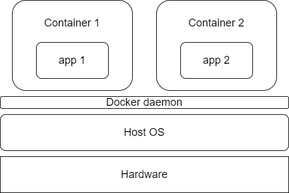
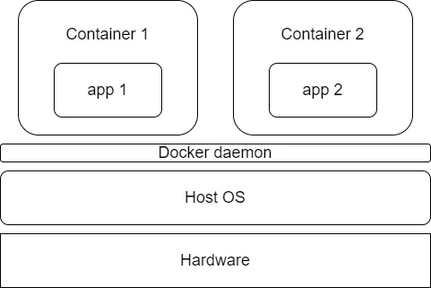

Introduction to Docker
Brought to you by,
Viacheslav Alpatov
Viacheslav Alpatov
What are containers?
Containers provide a way of creating an isolated environment, sometimes called a sandbox, in which applications and their dependencies can live.
Why are containers useful?
- Portability
- Consistency
- Speed to deploy
Containers vs Virtual Machines
 

Docker
Docker is a containerisation platform – it is a toolkit that allows you to build, deploy and manage containerised applications. There are alternative containerisation platforms, such as podman, however, Docker is the leading player in this space.
Docker terminology
- Images
- Containers
- Docker Daemon
- Containers
- Docker Client
- Docker Hub